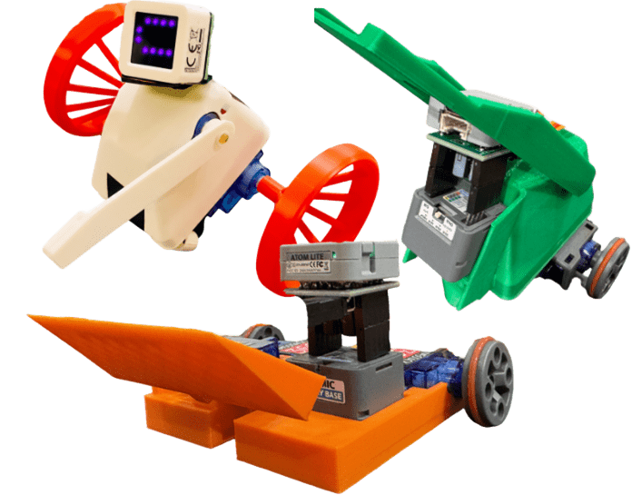
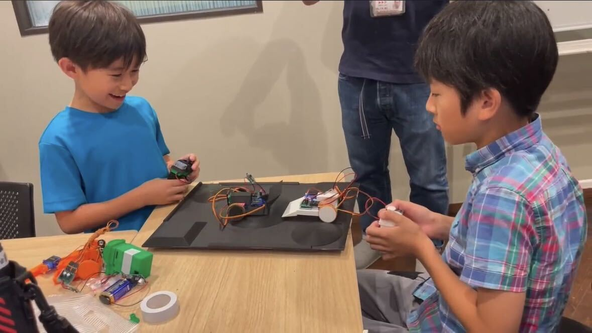
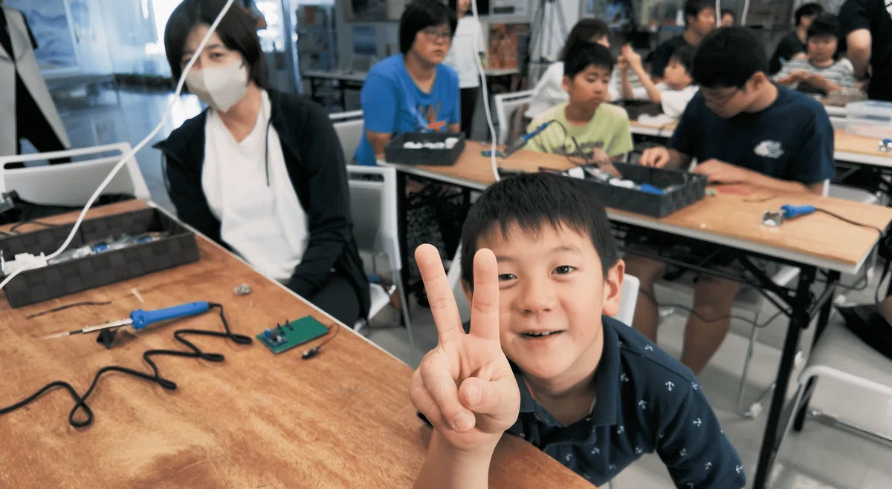
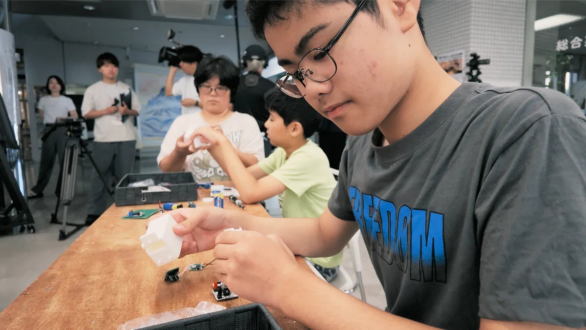
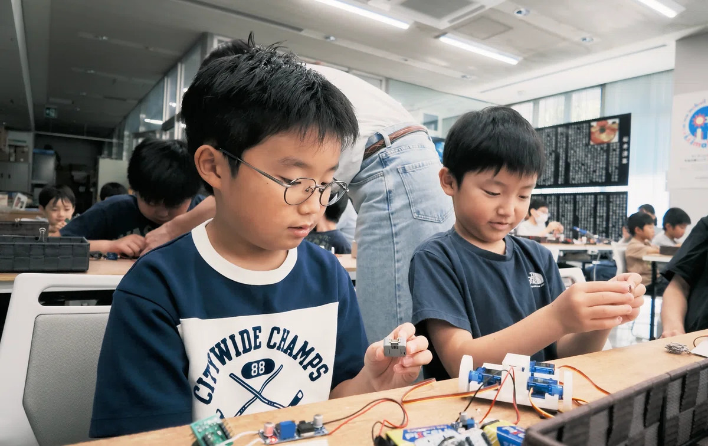
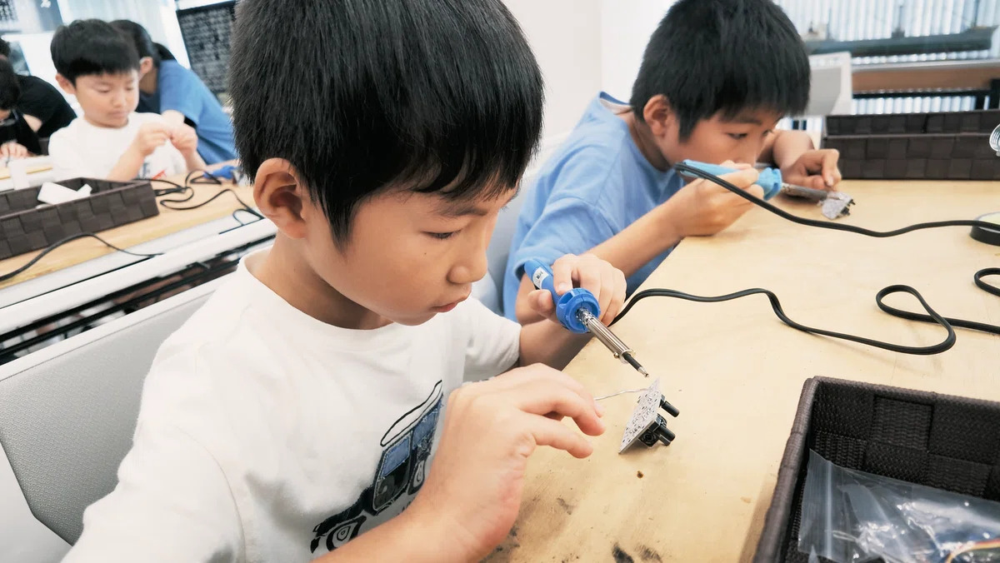
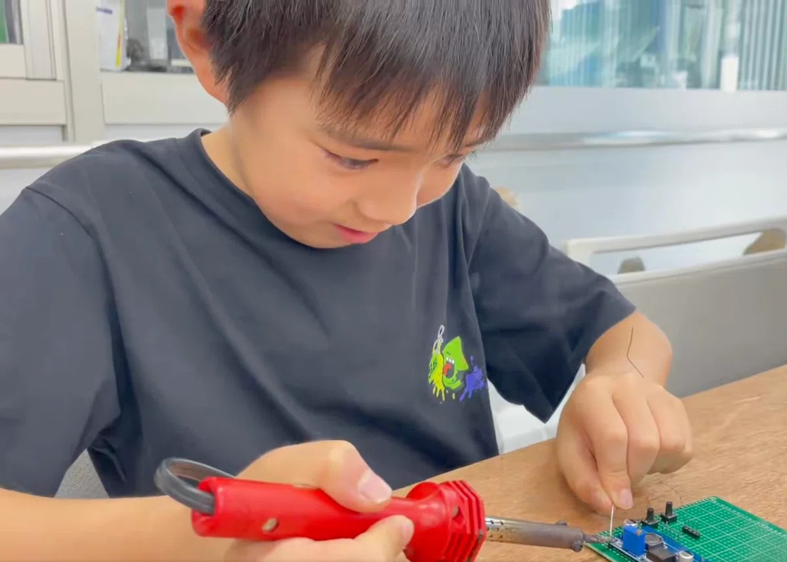
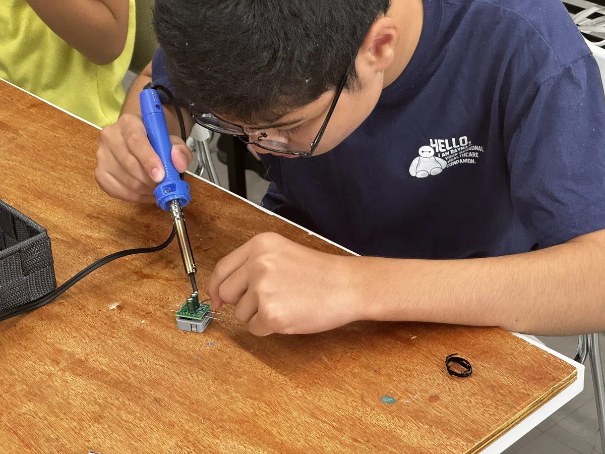
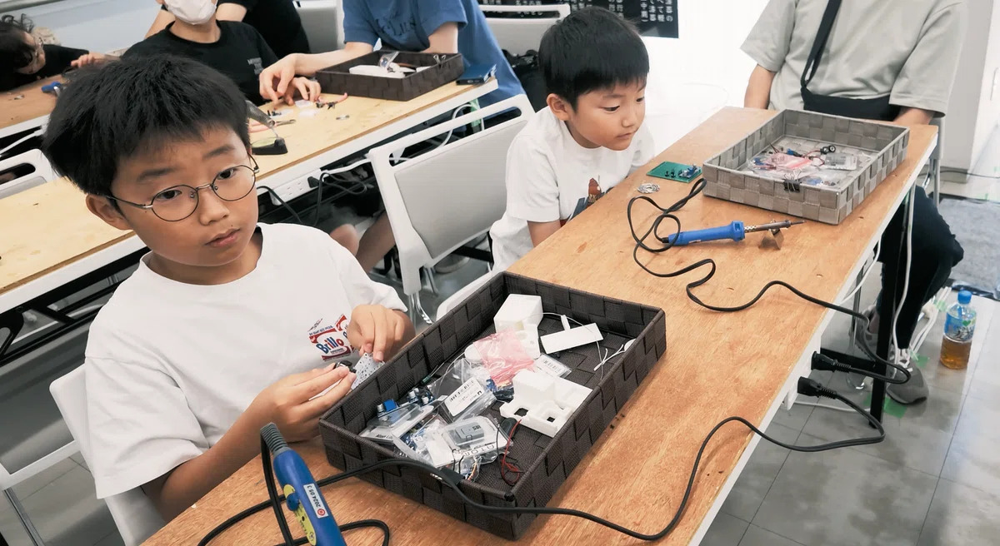

つくる
設計図を基に、部品をつなげたり、パーツを組み立てて自分のロボットをつくる！
BUILD. TRY. REBUILD.
はんだ付けから組み立て、改造、そしてバトルへ。
自分の手でつくったロボットと挑む、ちいさなロボコン。

WHAT IS MINI KAWA ROBO?

手のひらサイズの
本格ロボットバトル
ミニかわロボは、手のひらサイズのロボットを自分で作り、コントローラーで操作して対戦する小型ロボット競技です。 相手をひっくり返したり、フィールドの外へ押し出したりして勝敗を競います。3Dプリンタや市販のマイクロサーボなどを使い、比較的低コストかつ省スペースで製作・対戦できるのが特徴です。
この規格は、本格的な対戦ロボット競技「かわさきロボット競技大会（かわロボ）」の面白さを残しつつ、「広い場所が必要」「製作費や時間がかかる」「初心者にはハードルが高い」といった課題を減らすために考案されました。コンセプトは「どこでも気軽にできる手のひらサイズの小型対戦ロボット競技」。2023年に、かわロボ参加者でもある sin1's studio の sin1さん によって提案されました。
ミニかわロボ 考案・提唱：sin1（sin1's studio）
ABOUT THE EVENT
設計図を基に、部品をつなげたり、パーツを組み立てて自分のロボットをつくる！
独自の機構を加えたり形を変えたりして、自分だけの一台に改造！
コントローラーで自分のロボットを操って勝敗を競う！
KIDS AT WORK
自分でつくったロボットを、自分の手で動かして戦う。思い通りに動かなくても、直して、試して、また挑む。その先にあるのがミニかわロボ大会です。上手につくれるかより、やってみたい気持ちがあれば誰でも参加して楽しむことができます。







横にスワイプして写真を見る →
ENTRY
大会への参加をご希望の方は、下記の申し込みフォームからお申し込みください。
EVENT INFORMATION
開催日